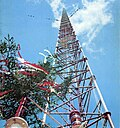

Antenna tuner
| Part of a series on |
| Antennas |
|---|
|  |
An antenna tuner, a matchbox, transmatch, antenna tuning unit (ATU), antenna coupler, or feedline coupler is a device connected between a radio transmitter or receiver and its antenna to improve power transfer between them by matching the impedance of the radio RF port (coaxial or waveguide) to the antenna's feedline. Antenna tuners are particularly important for use with transmitters. Transmitters feed power into a resistive load, very often 50 ohms, for which the transmitter is optimally designed for power output, efficiency, and low distortion.[1] If the load seen by the transmitter departs from this design value due to improper tuning of the antenna/feedline combination the power output will change, distortion may occur and the transmitter may overheat.
ATUs are a standard part of almost all radio transmitters; they may be a circuit included inside the transmitter itself or a separate piece of equipment connected between the transmitter and the antenna. In transmitters in which the antenna is mounted separate from the transmitter and connected to it by a transmission line (feedline), there may be a second ATU (or matching network) at the antenna to match the impedance of the antenna to the transmission line. In low power transmitters with attached antennas, such as cell phones and walkie-talkies, the ATU is fixed to work with the antenna. In high power transmitters like radio stations, the ATU is adjustable to accommodate changes in the antenna or transmitter, and adjusting the ATU to match the transmitter to the antenna is an important procedure done after any changes to these components have been made. This adjustment is done with an instrument called a SWR meter.
In radio receivers ATUs are not so important, because in the low frequency part of the radio spectrum the signal to noise ratio (SNR) is dominated by atmospheric noise. It does not matter if the impedance of the antenna and receiver are mismatched so some of the incoming power from the antenna is reflected and does not reach the receiver, because the signal can be amplified to make up for it. However in high frequency receivers the receiver's SNR is dominated by noise in the receiver's front end, so it is important that the receiving antenna is impedance-matched to the receiver to give maximum signal amplitude in the front end stages, to overcome noise.
Overview
An antenna's impedance is different at different frequencies. An antenna tuner matches a radio with a fixed impedance (typically 50 ohms for modern transceivers) to the combination of the feedline and the antenna; useful when the impedance seen at the input end of the feedline is unknown, complex, or otherwise different from the transceiver. Coupling through an ATU allows the use of one antenna on a broad range of frequencies. However, despite its name, an antenna 'tuner ' actually matches the transmitter only to the complex impedance reflected back to the input end of the feedline. If both tuner and transmission line were lossless, tuning at the transmitter end would indeed produce a match at every point in the transmitter-feedline-antenna system.[2] However, in practical systems feedline losses limit the ability of the antenna 'tuner' to match the antenna or change its resonant frequency.
If the loss of power is very low in the line carrying the transmitter's signal into the antenna, a tuner at the transmitter end can produce a worthwhile degree of matching and tuning for the antenna and feedline network as a whole.[3][4] With lossy feedlines (such as commonly used 50 Ohm coaxial cable) maximum power transfer only occurs if matching is done at both ends of the line.[5]
If there is still a high SWR (multiple reflections) in the feedline beyond the ATU, any loss in the feedline is multiplied several times by the transmitted waves reflecting back and forth between the tuner and the antenna, heating the wire instead of sending out a signal. Even with a matching unit at both ends of the feedline – the near ATU matching the transmitter to the feedline and the remote ATU matching the feedline to the antenna – losses in the circuitry of the two ATUs will reduce power delivered to the antenna. Therefore, operating an antenna far from its design frequency and compensating with a transmatch between the transmitter and the feedline is not as efficient as using a resonant antenna with a matched-impedance feedline, nor as efficient as a matched feedline from the transmitter to a remote antenna tuner attached directly to the antenna.
Broad band matching methods
Transformers, autotransformers, and baluns are sometimes incorporated into the design of narrow band antenna tuners and antenna cabling connections. They will all usually have little effect on the resonant frequency of either the antenna or the narrow band transmitter circuits, but can widen the range of impedances that the antenna tuner can match, and/or convert between balanced and unbalanced cabling where needed.
Ferrite transformers
Solid-state power amplifiers operating from 1–30 MHz typically use one or more wideband transformers wound on ferrite cores. MOSFETs and bipolar junction transistors are designed to operate into a low impedance, so the transformer primary typically has a single turn, while the 50 Ohm secondary will have 2 to 4 turns. This feedline system design has the advantage of reducing the retuning required when the operating frequency is changed. A similar design can match an antenna to a transmission line; For example, many TV antennas have a 300 Ohm impedance and feed the signal to the TV via a 75 Ohm coaxial line. A small ferrite core transformer makes the broad band impedance transformation. This transformer does not need, nor is it capable of adjustment. For receive-only use in a TV the small SWR variation with frequency is not a major problem.
It should be added that many ferrite based transformers perform a balanced to unbalanced transformation along with the impedance change. When the balanced to unbalanced function is present these transformers are called a balun (otherwise an unun). The most common baluns have either a 1:1 or a 1:4 impedance transformation.
Autotransformers
There are several designs for impedance matching using an autotransformer, which is a single-wire transformer with different connection points or taps spaced along the windings. They are distinguished mainly by their impedance transform ratio (1:1, 1:4, 1:9, etc., the square of the winding ratio), and whether the input and output sides share a common ground, or are matched from a cable that is grounded on one side (unbalanced) to an ungrounded (usually balanced) cable. When autotransformers connect balanced and unbalanced lines they are called baluns, just as two-winding transformers. When two differently-grounded cables or circuits must be connected but the grounds kept independent, a full, two-winding transformer with the desired ratio is used instead.
The circuit pictured at the right has three identical windings wrapped in the same direction around either an "air" core (for very high frequencies) or ferrite core (for middle, or low frequencies). The three equal windings shown are wired for a common ground shared by two unbalanced lines (so this design is called an unun), and can be used as 1:1, 1:4, or 1:9 impedance match, depending on the tap chosen. (The same windings could be connected differently to make a balun instead.)
For example, if the right-hand side is connected to a resistive load of 10 Ohms, the user can attach a source at any of the three ungrounded terminals on the left side of the autotransformer to get a different impedance. Notice that on the left side, the line with more windings measures greater impedance for the same 10 Ohm load on the right.
Narrow band design
The "narrow-band" methods described below cover a very much smaller span of frequencies, by comparison with the broadband methods described above.
Antenna matching methods that use transformers tend to cover a wide range of frequencies. A single, typical, commercially available balun can cover frequencies from 3.5–30.0 MHz, or nearly the entire shortwave radio band. Matching to an antenna using a cut segment of transmission line (described below) is perhaps the most efficient of all matching schemes in terms of electrical power, but typically can only cover a range about 3.5–3.7 MHz wide – a very small range indeed, compared to a broadband balun. Antenna coupling or feedline matching circuits are also narrowband for any single setting, but can be re-tuned more conveniently. However they are perhaps the least efficient in terms of power-loss (aside from having no impedance matching at all!).
Transmission line antenna tuning methods
The insertion of a special section of transmission line, whose characteristic impedance differs from that of the main line, can be used to match the main line to the antenna. An inserted line with the proper impedance and connected at the proper location can perform complicated matching effects with very high efficiency, but spans a very limited frequency range.[6]
The simplest example this method is the quarter-wave impedance transformer formed by a spliced section of mismatched transmission line. If a quarter-wavelength of 75 Ohm coaxial cable is linked to a 50 Ohm load, the SWR in the 75 Ohm quarter wavelength of line can be calculated as 75Ω / 50Ω = 1.5; the quarter-wavelength of line transforms the mismatched impedance to 112.5 Ohms (75 Ohms × 1.5 = 112.5 Ohms). Thus this inserted section matches a 112 Ohm antenna to a 50 Ohm main line.
The 1/6 wave coaxial transformer is a useful way to match 50 to 75 Ohms using the same general method.[7][8]
A second common method is the use of a stub: A shorted, or open section of line is connected in parallel with the main line. With coax this is done using a 'T'-connector. The length of the stub and its location can be chosen so as to produce a matched line below the stub, regardless of the complex impedance or SWR of the antenna itself.[9] The J-pole antenna is an example of an antenna with a built-in stub match.
Basic lumped circuit matching using the L network
The basic circuit required when lumped capacitances and inductors are used is shown below. This circuit is important in that many automatic antenna tuners use it, and also because more complex circuits can be analyzed as groups of L-networks.
This is called an L network not because it contains an inductor, (in fact some L-networks consist of two capacitors), but because the two components are at right angles to each other, having the shape of a rotated and sometimes reversed English letter 'L'. The 'T' ("Tee") network and the π ("Pi") network also have a shape similar to the English and Greek letters they are named after.
This basic network is able to act as an impedance transformer. If the output has an impedance consisting of resistance Rload and reactance j Xload, while the input is to be attached to a source which has an impedance of Rsource resistance and j Xsource reactance, then

and
- .

In this example circuit, XL and XC can be swapped. All the ATU circuits below create this network, which exists between systems with different impedances.
For instance, if the source has a resistive impedance of 50 Ω and the load has a resistive impedance of 1000 Ω :


If the frequency is 28 MHz,
As,

then,

So,

While as,

then,

{kind=link}
{kind=link}
{kind=link}
{kind=link}
Theory and practice
A parallel network, consisting of a resistive element (1000 Ω) and a reactive element (−j 229.415 Ω), will have the same impedance and power factor as a series network consisting of resistive (50 Ω) and reactive elements (−j 217.94 Ω).
{kind=link}
By adding another element in series (which has a reactive impedance of +j 217.94 Ω), the impedance is 50 Ω (resistive).
{kind=link}
Types of L networks and their use
The 'L'-network can have eight different configurations, six of which are shown here. The two missing configurations are the same as the bottom row, but with the parallel element (wires vertical) on the right side of the series element (wires horizontal), instead of on the left, as shown.
In discussion of the diagrams that follows the in connector comes from the transmitter or "source"; the out connector goes to the antenna or "load". The general rule (with some exceptions, described below) is that the series element of an 'L'-network goes on the side with the lowest impedance.[10]
{kind=link}
So for example, the three circuits in the left column and the two in the bottom row have the series (horizontal) element on the out side are generally used for stepping up from a low-impedance input (transmitter) to a high-impedance output (antenna), similar to the example analyzed in the section above. The top two circuits in the right column, with the series (horizontal) element on the in side, are generally useful for stepping down from a higher input to a lower output impedance.
The general rule only applies to loads that are mainly resistive, with very little reactance. In cases where the load is highly reactive – such as an antenna fed with a signals whose frequency is far away from any resonance – the opposite configuration may be required. If far from resonance, the bottom two step down (high-in to low-out) circuits would instead be used to connect for a step up (low-in to high-out that is mostly reactance).[11]
The low- and high-pass versions of the four circuits shown in the top two rows use only one inductor and one capacitor. Normally, the low-pass would be preferred with a transmitter, in order to attenuate harmonics, but the high-pass configuration may be chosen if the components are more conveniently obtained, or if the radio already contains an internal low-pass filter, or if attenuation of low frequencies is desirable – for example when a local AM station broadcasting on a medium frequency may be overloading a high frequency receiver.
The Low R, high C circuit is shown feeding a short vertical antenna, such as would be the case for a compact, mobile antenna or otherwise on frequencies below an antenna's lowest natural resonant frequency. Here the inherent capacitance of a short, random wire antenna is so high that the 'L'-network is best realized with two inductors, instead of aggravating the problem by using a capacitor.
The Low R, high L circuit is shown feeding a small loop antenna. Below resonance this type of antenna has so much inductance, that more inductance from adding a coil would make the reactance even worse. Therefore, the 'L'-network is composed of two capacitors.
An 'L'-network is the simplest circuit that will achieve the desired transformation; for any one given antenna and frequency, once a circuit is selected from the eight possible configurations (of which six are shown above) only one set of component values will match the in impedance to the out impedance. In contrast, the circuits described elsewhere have three or more components, and hence have many more choices for inductance and capacitance that will produce an impedance match – usually at least two, if not a continuum, a few of which may be "bad", i.e. will cause a resonance inside the ATU that results in high loss. Radio operators must experiment and test the available settings, and use informed judgement to choose the best among those possible adjustments that can all match the same impedance.
Antenna system losses
Loss in antenna tuners
Every means of impedance match will introduce some power loss. This will vary from a few percent for a transformer with a ferrite core, to 50% or more for a complex ATU that is improperly tuned or working at the limits of its tuning range.[12]
With the narrow band tuners, the 'L'-network has the lowest loss, partly because it has the fewest components, but mainly because it necessarily operates at the lowest possible Q value for a given impedance transformation. With the 'L'-network, the loaded Q is not adjustable, but is fixed midway between the source and load impedances. Since most of the loss in practical tuners will be in the coil (inductor), choosing between either the low-pass or high-pass network for lowest needed inductance may reduce the loss somewhat.
The 'L'-network using only capacitors will have the lowest loss, but this network only works where the load impedance is very inductive, making it a good choice for a small loop antenna. Inductive impedance also occurs with straight-wire antennas used at frequencies slightly above a resonant frequency, where the antenna is too long – for example, between a quarter and a half wave long at the operating frequency. However, problematic straight-wire antennas are typically too short for the frequency in use.
With the high-pass 'T'-network, the loss in the tuner can vary from a few percent – if tuned for lowest loss – to over 50% if the tuner is not properly adjusted. Using the maximum available capacitance will give less loss, than if one simply tunes for a match without regard for the settings.[13] This is because using more capacitance means using fewer inductor turns,[dubious – discuss] and the loss is mainly in the inductor.
With the SPC tuner the losses will be somewhat higher than with the 'T'-network, since the added capacitance across the inductor will shunt some reactive current to ground which must be cancelled by additional current in the inductor.[14] The trade-off is that the effective inductance of the coil is increased, thus allowing operation at lower frequencies than would otherwise be possible.
If additional filtering is desired, the inductor can be deliberately set to larger values, thus providing a partial band pass effect.[15] Either the high-pass 'T', low-pass 'π', or the SPC tuner can be adjusted in this manner. The additional attenuation at harmonic frequencies can be increased significantly with only a small percentage of additional loss at the tuned frequency.
When adjusted for minimum loss, the SPC tuner will have better harmonic rejection than the high-pass 'T' due to its internal tank circuit being a bandpass filter. Either type is capable of good harmonic rejection if a small additional loss is acceptable. The low-pass 'π' has exceptional harmonic attenuation at any setting, including the lowest-loss.
ATU location
An ATU will be inserted somewhere along the line connecting the radio transmitter or receiver to the antenna.[16] The antenna feedpoint is usually high in the air (for example, a dipole antenna) or far away (for example, an end-fed random wire antenna). A transmission line, or feedline, must carry the signal between the transmitter and the antenna. The ATU can be placed anywhere along the feedline: at the transmitter, at the antenna, or somewhere in between.
Antenna tuning is best done as close to the antenna as possible to minimize loss, increase bandwidth, and reduce peak voltage and peak current on the transmission line. Also, when the information being transmitted has frequency components whose wavelength is a significant fraction of the electrical length of the feed line, distortion of the transmitted information will occur if there are standing waves on the line. Analog TV and FM stereo broadcasts are affected in this way. For those modes, matching at the antenna is required.
When possible, an automatic or remotely-controlled tuner in a weather-proof case at or near the antenna is convenient and makes for an efficient system. With such a tuner, it is possible to match a wide range of antennas.[17]
When the ATU must be located near the radio for convenient adjustment, any significant SWR will increase the loss in the feedline. For that reason, when using an ATU at the transmitter, low-loss, high-impedance feedline is a great advantage (open-wire line, for example). A short length of low-loss coaxial line is acceptable, but with longer lossy lines the additional loss due to SWR becomes very high.[18]
It is very important to remember that when matching the transmitter to the line, as is done when the ATU is near the transmitter, there is no change in the SWR in the feedline. The backlash currents reflected from the antenna are retro-reflected by the ATU – usually several times between the two – and so are invisible on the transmitter-side of the ATU. The result of the multiple reflections is compounded loss, higher voltage or higher currents, and narrowed bandwidth, none of which can be corrected by the ATU.
Standing wave ratio
{kind=link}
It is a common misconception that a high standing wave ratio (SWR) per se causes loss.[3] A well-adjusted ATU feeding an antenna through a low-loss line may have only a small percentage of additional loss compared with an intrinsically matched antenna, even with a high SWR (4 to 1, for example).[19] An ATU sitting beside the transmitter just re-reflects energy reflected from the antenna ("backlash current") back yet again, along the feedline to the antenna ("retro-reflection").[3] High losses arise from RF resistance in the feedline and antenna, and those multiple reflections due to high SWR cause feedline losses to be compounded.
Using high-impedance, low-loss feedline with an ATU results in very little loss, even with multiple reflections. However, if the feedline-antenna combination is 'lossy' then an identical high SWR may lose a considerable fraction of the transmitter's power output. High impedance lines – such as most parallel-wire lines with impedances between 300–500 Ω – carry power mostly as high voltage rather than high current, and current alone determines the power lost to line resistance. So despite high SWR, very little power is lost in high-impedance line compared low-impedance line, such as typical 50 Ω coaxial cable. For that reason, radio operators transmitting through high-impedance feedline can be more casual about where and if they use an ATU.
Without an ATU, the SWR from a mismatched antenna and feedline can present an improper load to the transmitter, causing distortion and loss of power or efficiency with heating and / or burning of the output stage components. Modern solid state transmitters will automatically reduce power when they detect high SWR, so some solid-state power stages only produce weak signals if the SWR rises above 1.5 to 1 (1.5:1). Were it not for the problem of automatic power-reduction, even the losses from an SWR of 2:1 could be tolerated, since only 11 percent of transmitted power would be reflected and 89 percent sent out through to the antenna. So the main loss of output power with high SWR is due to the transmitter "backing off" its output when challenged with backlash current.
Tube transmitters and amplifiers usually have an adjustable output network that can feed mismatched loads up to perhaps 3:1 SWR without trouble. In effect the built-in π-network of the transmitter output stage acts as an ATU. Further, since tubes are electrically robust (even though mechanically fragile), tube-based circuits can tolerate very high backlash current without damage.
Broadcast applications
AM broadcast transmitters
{kind=link}
One of the oldest applications for antenna tuners is in AM and shortwave broadcasting transmitters. AM transmitters usually use a vertical antenna (tower) which can be from 0.20 to 0.68 wavelengths long. At the base of the tower an ATU is used to match the antenna to the 50 Ohm transmission line from the transmitter. The most commonly used circuit is a T-network, using two series inductors with a shunt capacitor between them. When multiple towers are used the ATU network may also provide for a phase adjustment so that the currents in each tower can be phased relative to the others to produce a desired pattern. These patterns are often required by law to include nulls in directions that could produce interference as well as to increase the signal in the target area. Adjustment of the ATUs in a multitower array is a complex and time consuming process requiring considerable expertise.
High-power shortwave transmitters
For International Shortwave (50 kW and above), frequent antenna tuning is done as part of frequency changes which may be required on a seasonal or even a daily basis. Modern shortwave transmitters typically include built-in impedance-matching circuitry for SWR up to 2:1 , and can adjust their output impedance within 15 seconds.
The matching networks in transmitters sometimes incorporate a balun or an external one can be installed at the transmitter in order to feed a balanced line. Balanced transmission lines of 300 Ohms or more were more-or-less standard for all shortwave transmitters and antennas in the past, even by amateurs. Most shortwave broadcasters have continued to use high-impedance feeds even before the advent of automatic impedance matching.
The most commonly used shortwave antennas for international broadcasting are the HRS antenna (curtain array), which cover a 2 to 1 frequency range and the log-periodic antenna which cover up to 8 to 1 frequency range. Within that range, the SWR will vary, but is usually kept below 1.7 to 1 – within the range of SWR that can be tuned by antenna matching built-into many modern transmitters. Hence, when feeding these antennas, a modern transmitter will be able to tune itself as needed to match at any frequency.
Automatic antenna tuning
{kind=link}
Automatic antenna tuning is used in flagship mobile phones, transceivers for amateur radio, and in land mobile, marine, and tactical HF radio transceivers.
Each antenna tuning system (AT) shown in the figure has an "antenna port", which is directly or indirectly coupled to an antenna, and another port, referred to as "radio port" (or as "user port"), for transmitting and / or receiving radio signals through the AT and the antenna. Each AT shown in the figure has a single antenna-port, (SAP) AT, but a multiple antenna-port (MAP) AT may be needed for MIMO radio transmission.
{kind=link}
Several control schemes can be used in a radio transceiver or transmitter to automatically adjust an antenna tuner (AT). The control schemes are based on one of the two configurations, (a) and (b), shown in the diagram. For both configurations, the transmitter comprises:
- antenna
- antenna tuner / matching network (AT)
- sensing unit (SU)
- control unit (CU)
- transmitter and signal processing unit (TSPU)
The TSPU incorporates all the parts of the transmitting not otherwise shown in the diagram.
The TX port of the TSPU delivers a test signal. The SU delivers, to the TSPU, one or more output signals indicating the response to the test signal, one or more electrical variables (such as voltage, current, incident or forward voltage, etc.). The response sensed at the radio port in the case of configuration (a) or at the antenna port in the case of configuration (b). Note that neither configuration (a) nor (b) is ideal, since the line between the antenna and the AT attenuates SWR; response to a test signal is most accurately tested at or near the antenna feedpoint.
Control scheme types[20] Control scheme Configuration Extremum-seeking? Type 0 n/a n/a Type 1 (a) No Type 2 (a) Yes Type 3 (b) No Type 4 (b) Yes
Broydé & Clavelier (2020) distinguish five types of antenna tuner control schemes, as follows:[20]
- Type 0 designates the open-loop AT control schemes that do not use any SU, the adjustment being typically only based on previous knowledge programmed for each operating frequency
- Type 1 and type 2 control schemes use configuration (a)
- type 2 uses extremum-seeking control
- type 1 does not seek an extreme
- Type 3 and type 4 control schemes use configuration (b)
- type 4 uses extremum-seeking control
- type 3 does not seek an extreme
The control schemes may be compared as regards:
- use of closed-loop or open-loop control (or both)
- measurements used
- ability to mitigate the effects of the electromagnetic characteristics of the surroundings
- aim / goal
- accuracy and speed
- dependence on use of a particular model of AT or CU
See also
- American Radio Relay League
- Electrical lengthening
- Impedance bridging
- Loading coil
- Preselector
- Smith chart
References
- ^ "Load Pull for Power Devices". microwaves101.com. Retrieved 26 August 2024.
- ^ Stiles, Jim (2009-03-25). "§5.1 Matching with lumped elements" (PDF). Chapter 5 – Impedance matching and tuning (course handout). EECS 723. University of Kansas. Retrieved 2025-09-10 – via ittc.ku.edu.
- ^ a b c Maxwell, W.M., W2DU (1990). Reflections: Transmission lines and antennas (1st ed.). Newington, CT: American Radio Relay League. ISBN 0-87259-299-5.
{{cite book}}: CS1 maint: multiple names: authors list (link) CS1 maint: numeric names: authors list (link) — Accurate, but only for high-impedance feedline. ARRL determined invalid for common, moderate loss coaxial cable, and ceased publication. - ^ Moore, Cecil, W5DXP (2014-01-09). "Old XYL's tales in amateur radio". Archived from the original on 2019-06-02. Retrieved 2016-05-08 – via w5dxp.com.
{{cite web}}: CS1 maint: multiple names: authors list (link) CS1 maint: numeric names: authors list (link) — "XYL" in the title is a telegraph abbreviation of "ex-young lady", meaning "wife". - ^ "Foothills Amateur Radio Society (K6YA)" (radio club main page) – via k6ya.org.
- ^ Silver, H. Ward; et al., eds. (2011). ARRL Antenna Book. Newington, CT: American Radio Relay League. pp. 22–24. ISBN 978-0-87259-694-8.
- ^ Cathey, T. (2009-05-09). "How to match a 50 Ohm coax to 75 Ohm coax, 35 Ohm Yagis, etc". amfone.net/Amforum. AM Forum.
- ^ The theoretical basis for matching with 1/6-wave co-axial lines is discussion by the inventor, and wider application of the method is found here:
Branham, P. (1959). "A convenient transformer for matching co-axial lines" (PDF). Geneva, CH: CERN – via cds.cern.ch. - ^ Storli, Martin (2017-05-13). "Single stub match calculator". Antenna pages. arcticpeak.com (interactive javascript).
- ^ Silver, H. Ward; et al., eds. (2011). The ARRL Handbook for Radio Communications (88th ed.). Newington, CT: American Radio Relay League.
- ^ Smith, Philip H. (1969). Electronic Applications of the Smith Chart. Tucker, GA: Nobel Publishing. p. 121. ISBN 1-884932-39-8.
- ^ Hallas, Joel R., Dr. W1ZR (2010). The ARRL Guide to Antenna Tuners. Newington, CT: American Radio Relay League. p. 4:3. ISBN 978-0-87259-098-4.
{{cite book}}: CS1 maint: multiple names: authors list (link) CS1 maint: numeric names: authors list (link) - ^ Silver, H. Ward; et al., eds. (2014). The ARRL Handbook (2015 ed.). Newington, CT: American Radio Relay League. p. 20:16. ISBN 978-1-62595-019-2.
- ^ Schmidt, Kevin, W9CF. "Estimating T-network losses at 80 and 160 meters" (PDF). Archived from the original (PDF) on 2021-02-04. Retrieved 2014-10-20 – via fermi.la.asu.edu.
{{cite web}}: CS1 maint: multiple names: authors list (link) CS1 maint: numeric names: authors list (link) - ^ Stanley, J. (September 2015). "Antenna tuners as preselectors". Technical correspondence. QST magazine. p. 61.
- ^ Miller, Dave (August 1995). "Back to basics" (PDF). QST magazine. Archived from the original (PDF) on 2013-06-22. Retrieved 2011-10-29.
- ^ Links to customer manuals and guides from a commercial website:
- "HF users' guide" (PDF). SGC World (sgcworld.com).
- "Stealth kit" (PDF). SGC World (sgcworld.com).
- "Smart tuners for stealth antennas" (PDF). SGC World (sgcworld.com).
- "HF users' guide" (PDF). SGC World (sgcworld.com).
- ^ Hallas, Joel R., Dr. W1ZR (2010). The ARRL Guide to Antenna Tuners. Newington, CT: American Radio Relay League. p. 7:4. ISBN 978-0-87259-098-4.
{{cite book}}: CS1 maint: multiple names: authors list (link) CS1 maint: numeric names: authors list (link) - ^ Hall, Jerry; et al., eds. (1988). ARRL Antenna Book. Newington, CT: American Radio Relay League. p. 25:18 ff. ISBN 978-0-87259-206-3.
- ^ a b Broydé, F.; Clavelier, E. (June 2020). "A typology of antenna tuner control schemes, for one or more antennas". Excem Research Papers in Electronics and Electromagnetics (1). doi:10.5281/zenodo.3902749.
Further reading
- Wright, H. C. (1987). An Introduction to Antenna Theory (BP198). London: Bernard Babani.
- Radio Society of Great Britain (1976). The Radio Communication Handbook (5th ed.). Bedford, UK: RSGB. ISBN 0-900612-58-4.
- Rohde, Ulrich L. (1974). "Die Anpassung von kurzen Stabantennen für KW-Sender" [Matching of short rod-antennas for short-wave transmitters]. Funkschau (in German) (7).
- Rohde, Ulrich L. (13 September 1975). "Match any antenna over the 1.5 to 30 MHz range with only two adjustable elements". Electronic Design. 19.